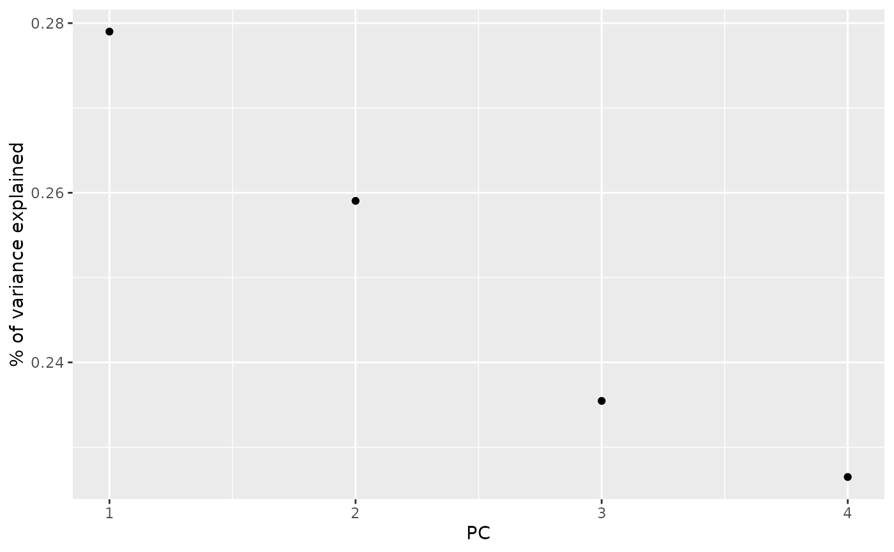

Broom tidies a number of lists that are effectively S3
objects without a class attribute. For example, stats::optim(),
svd() and akima::interp() produce consistent output, but because
they do not have a class attribute, they cannot be handled by S3 dispatch.
These functions look at the elements of a list and determine if there is
an appropriate tidying method to apply to the list. Those tidiers are
themselves are implemented as functions of the form tidy_<function>
or glance_<function> and are not exported (but they are documented!).
If no appropriate tidying method is found, throws an error.
tidy_svd(x, matrix = "u", ...)
Arguments
| x | A list with components |
|---|---|
| matrix | Character specifying which component of the PCA should be tidied.
|
| ... | Additional arguments. Not used. Needed to match generic
signature only. Cautionary note: Misspelled arguments will be
absorbed in |
Value
A tibble::tibble with columns depending on the component of PCA being tidied.
If matrix is "u", "samples", "scores", or "x" each row in the
tidied output corresponds to the original data in PCA space. The columns
are:
rowID of the original observation (i.e. rowname from original data).
PCInteger indicating a principal component.
valueThe score of the observation for that particular principal component. That is, the location of the observation in PCA space.
rowThe variable labels (colnames) of the data set on which PCA was performed
PCAn integer vector indicating the principal component
valueThe value of the eigenvector (axis score) on the indicated principal component
PCAn integer vector indicating the principal component
std.devStandard deviation explained by this PC
percentFraction of variation explained by this component
cumulativeCumulative fraction of variation explained by principle components up to this component.
Details
See https://stats.stackexchange.com/questions/134282/relationship-between-svd-and-pca-how-to-use-svd-to-perform-pca for information on how to interpret the various tidied matrices. Note that SVD is only equivalent to PCA on centered data.
See also
Other svd tidiers:
augment.prcomp(),
tidy.prcomp(),
tidy_irlba()
Other list tidiers:
glance_optim(),
list_tidiers,
tidy_irlba(),
tidy_optim(),
tidy_xyz()
Examples
#> #> #> #> #>tidy_u#> # A tibble: 600 x 3 #> row PC value #> <int> <dbl> <dbl> #> 1 1 1 -0.108 #> 2 2 1 -0.0995 #> 3 3 1 -0.113 #> 4 4 1 -0.110 #> 5 5 1 -0.114 #> 6 6 1 -0.0992 #> 7 7 1 -0.117 #> 8 8 1 -0.107 #> 9 9 1 -0.112 #> 10 10 1 -0.104 #> # … with 590 more rows#> # A tibble: 4 x 4 #> PC std.dev percent cumulative #> <int> <dbl> <dbl> <dbl> #> 1 1 20.9 0.730 0.730 #> 2 2 11.7 0.229 0.958 #> 3 3 4.68 0.0367 0.995 #> 4 4 1.76 0.00518 1#> #> #> #> #>tidy_v#> # A tibble: 16 x 3 #> column PC value #> <int> <dbl> <dbl> #> 1 1 1 0.521 #> 2 2 1 -0.269 #> 3 3 1 0.580 #> 4 4 1 0.565 #> 5 1 2 -0.377 #> 6 2 2 -0.923 #> 7 3 2 -0.0245 #> 8 4 2 -0.0669 #> 9 1 3 0.720 #> 10 2 3 -0.244 #> 11 3 3 -0.142 #> 12 4 3 -0.634 #> 13 1 4 0.261 #> 14 2 4 -0.124 #> 15 3 4 -0.801 #> 16 4 4 0.524library(ggplot2) library(dplyr) ggplot(tidy_d, aes(PC, percent)) + geom_point() + ylab("% of variance explained")tidy_u %>% mutate(Species = iris$Species[row]) %>% ggplot(aes(Species, value)) + geom_boxplot() + facet_wrap(~PC, scale = "free_y")